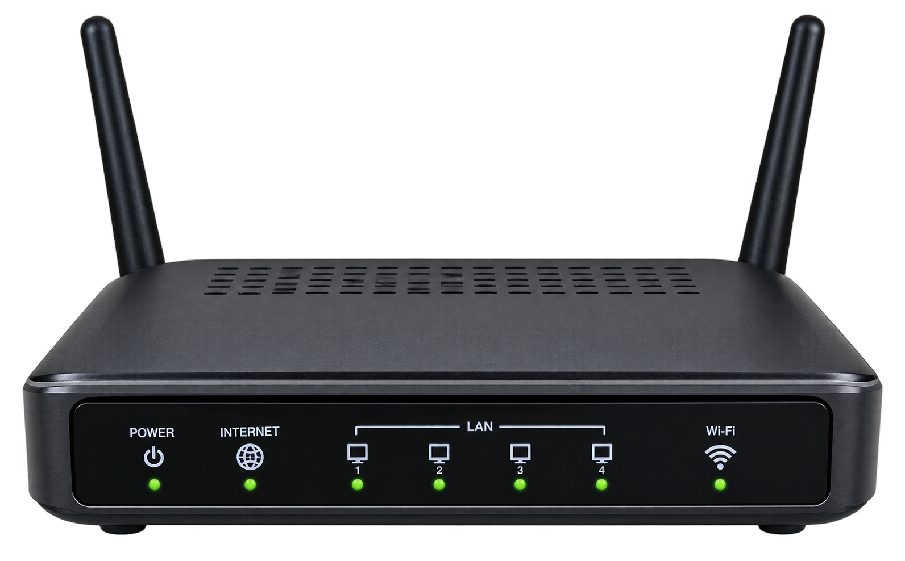
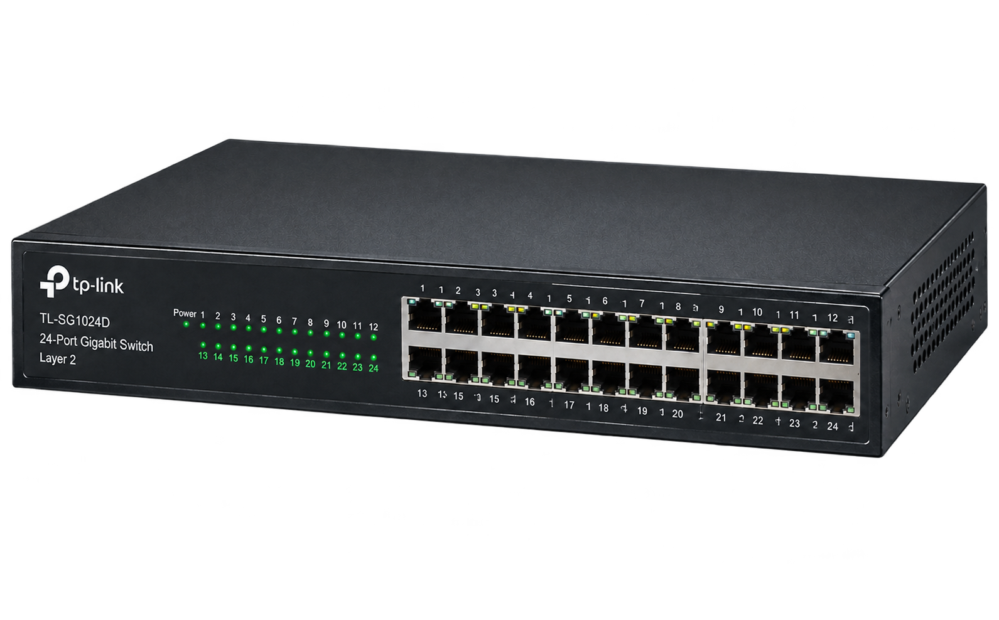
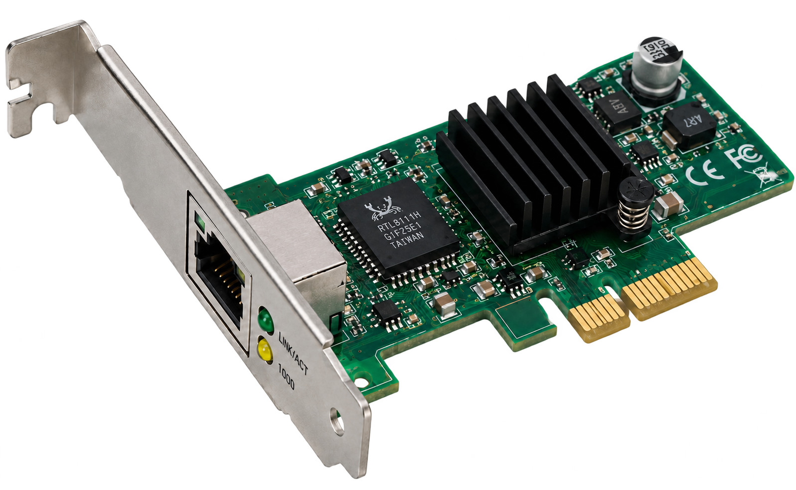
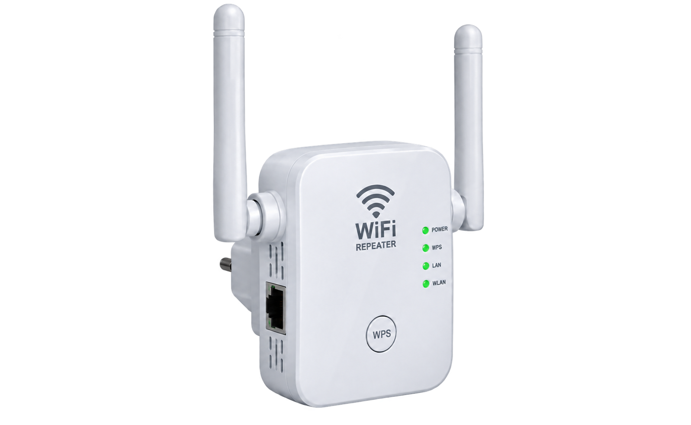

Dispositivos de Infraestructura de Red
Examine los equipamientos clave de la capa de acceso, distribución y enlace de datos previo a la evaluación técnica.

Router (Enrutador)
Interconecta redes heterogéneas, determina la mejor ruta de forwarding mediante tablas de ruteo e implementa políticas IP y NAT.

Switch (Conmutador)
Conecta dispositivos dentro de una LAN, conmutando tramas Ethernet basándose en direcciones MAC únicas para evitar colisiones.

NIC (Placa de Red)
Interfaz física que convierte datos del host en señales eléctricas, ópticas o radiofrecuencia. Posee la MAC permanente.

Repetidor / Extensor
Regenera y amplifica señales atenuadas para extender la cobertura física del medio sin examinar la trama ni el paquete.